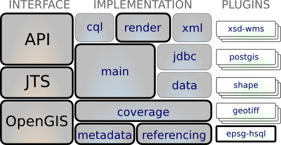

Render¶
Supports the rendering of geospatial information using the Java2D api.
This is most likely the reason you are interested in the GeoTools library - this module finally lets you draw a map using all that data you set up.
Reference
- Symbology Encoding
- Style Layer Descriptor
- http://www.opengeospatial.org/standards/sld
- http://www.opengeospatial.org/standards/se
Tutorial
- style (tutorial)
Maven:
<dependency>
<groupId>org.geotools</groupId>
<artifactId>gt-render</artifactId>
<version>${geotools.version}</version>
</dependency>
Contents
Graphic plugins:
Unsupported: